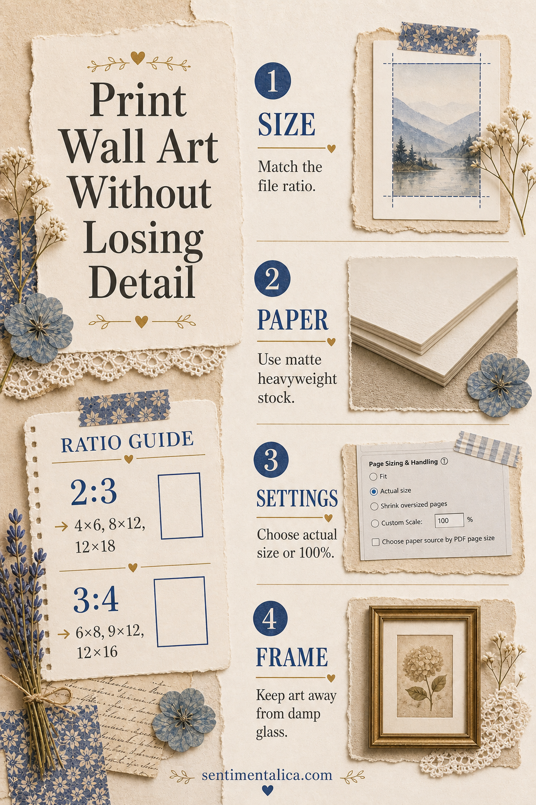
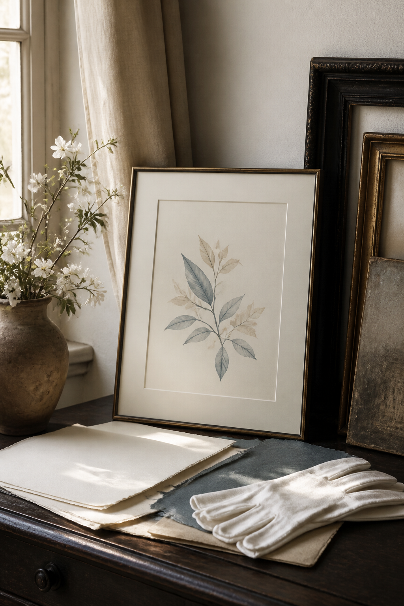

Printable wall art loses quality most often because the file is forced into the wrong shape, enlarged beyond its useful resolution, or printed with a setting that quietly shrinks it. Four decisions protect the detail: ratio, paper, scale, and frame.

Match the frame to the file ratio
Check the artwork’s width-to-height ratio before choosing a frame. A 2:3 file fits 4 × 6, 8 × 12, and 12 × 18 inches. A 3:4 file fits 6 × 8, 9 × 12, and 12 × 16 inches. Cropping a 2:3 image into a 3:4 frame removes content from the long edges, so preview the crop rather than assuming it will fit.
Choose matte paper and actual size
Matte heavyweight stock gives illustrations a soft, non-reflective surface and usually holds fine lines better than ordinary copier paper. In the print dialog, choose “actual size” or 100% when the document already matches the intended dimensions. Disable automatic “fit” unless you deliberately need margins.

Make one proof before the final print
Print a small crop containing the darkest shadow, palest detail, and one saturated color. Let the paper dry, then judge it in the room where the art will hang. Printer screens are luminous; paper is not, so the proof may need a slight brightness adjustment.
Frame without trapping moisture
Use a mat or spacer so the print does not rest against damp glass. Keep framed paper away from direct sun and humid exterior walls. For themed botanical, antique, fantasy, and seasonal art to print for personal creative projects, browse the Sentimentalica printable image collections and confirm the chosen file’s ratio before ordering the frame.
Visuals in this article were created with AI assistance and art-directed for Sentimentalica.
Explore more printable art ideas in the Sentimentalica journal archive.